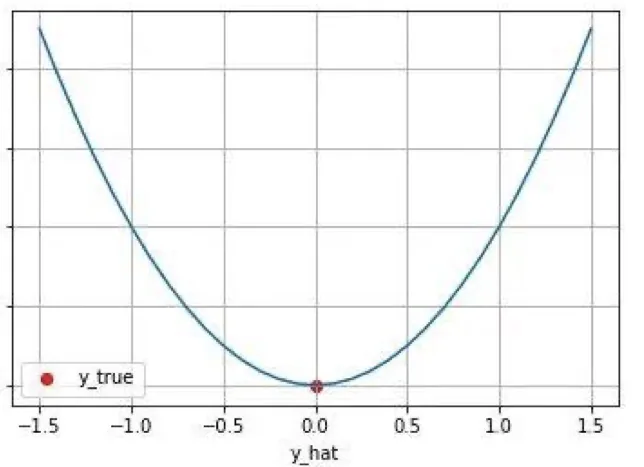
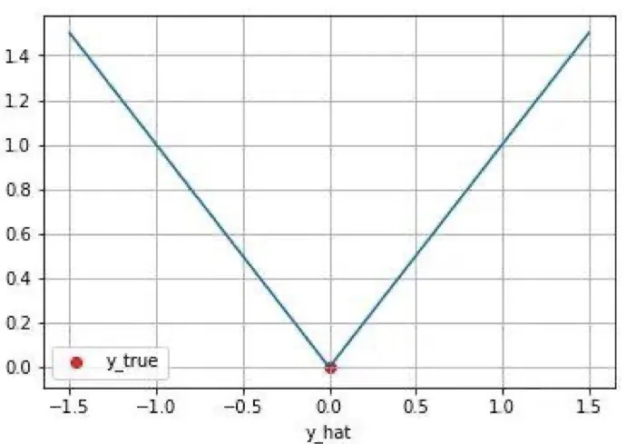
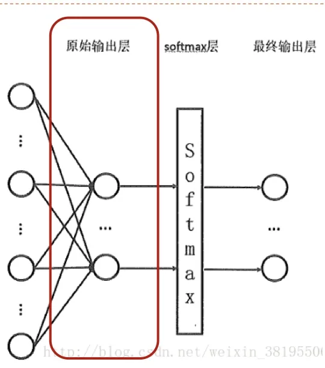

计算机视觉 · 第 5 章 前馈神经网络
5.6 损失函数
训练网络需要一个判据：当前这组权重到底有多差？这个判据就是损失函数。这一节先给出损失函数的定位——它是一把从权重映射到「差多少」的尺子，然后分别讲回归任务常用的 MSE（L2 Loss）、MAE（L1 Loss），以及分类任务用的交叉熵：从信息量、信息熵、相对熵一路推过去，最后说明为什么网络输出要先过一遍 Softmax。
1. 损失函数是干什么的
训练过程就是调整权重矩阵 ω，让当前网络的预测值接近我们真正想要的目标值。不妨将网络的预测值与目标值的差距称为损失值，所以网络训练的最终目的就是调整权重矩阵 ω 让损失值 loss 尽可能小。
那么如何知道哪些权重需要更改？是调高还是调低？我们需要一个度量任意某个权重 ω 好坏的方法：当发现 ω 不利于损失值下降时，将 ω 调小；当发现 ω 有利于损失值下降时将 ω 调高。也就是说，要找到一个从权重 ω 输入、输出损失值 loss 的评估函数，这个函数称为损失函数。
课件按任务类型给出两套常用选择：分类任务中最常见的是交叉熵损失；回归任务中最常见的是 L1 Loss（绝对损失，Mean Absolute Error，MAE）和 L2 Loss（平方损失，Mean Squared Error，MSE）。
2. 回归任务的损失：均方误差 L2 Loss
均方误差（Mean Squared Error，MSE）是机器学习、深度学习回归任务中最常用的一种损失函数，也称为 L2 Loss，形式是各样本预测值与真实值之差的平方的平均：
loss = (1/n) [ (pre₁ − y₁)² + (pre₂ − y₂)² + … + (pre_n − y_n)² ]
- MSE 损失的最小值为 0（当预测等于真实值时），最大值为无穷大；
- 随着预测与真实值绝对误差 |pred − y| 的增加，MSE 损失呈平方增长；
- 因此 L2 loss 对离群点更敏感——一个错得很离谱的样本会把损失拉得很大。

3. 回归任务的损失：绝对值损失 L1 Loss
绝对值损失（Mean Absolute Error，MAE）是另一类常用的损失函数，也称为 L1 Loss，取的是绝对误差的平均：
loss = (1/n) [ |pre₁ − y₁| + |pre₂ − y₂| + … + |pre_n − y_n| ]
- MAE 损失的最小值为 0（当预测等于真实值时），最大值为无穷大；
- 随着预测与真实值绝对误差 |pred − y| 的增加，MAE 损失线性增长，不像 MSE 那样平方增长，所以它离群点更稳健，代价是在 0 点附近不可导、梯度是常数，收敛有时更慢。

4. 分类任务的损失：交叉熵损失
交叉熵损失函数（Cross-Entropy Loss）度量的是两个概率分布之间的差异性。要理解它，得从「信息量」这个概念一步步搭上去。
（1）信息量与信息熵
信息量衡量的是「信息消除不确定性的程度」。课件用了两个例子：
- 「太阳从东边升起」——几乎必然发生，信息量 = 0；
- 「学霸小明期末考试不及格」——很罕见，信息量很大。
可见信息量大小与信息发生的概率成反比。设某一事件发生的概率为 P(x)，其信息量表示为 I(x) = −log P(x)：概率越接近 1，信息量越接近 0；概率越小，信息量越大。
信息熵则是所有信息量的期望：H(X) = −Σi=1n P(xi) log P(xi)，其中 X = {x₁, x₂, …, xn}。它描述的是一个随机变量（或一个分布）本身的不确定程度。
（2）相对熵（KL 散度）
相对熵（又称 KL 散度）衡量同一随机变量 X 的两个单独的概率分布 P(X) 和 Q(X) 之间的差异：
D_KL(p‖q) = Σi=1n p(xi) log ( p(xi) / q(xi) )
它有一个很有用的分解：把对数里的商拆开，
D_KL(p‖q) = Σ p(xi) log p(xi) − Σ p(xi) log q(xi)
第一项就是 −H(p)（p 的负信息熵），第二项才是与模型 q 有关的部分。因为 H(p) 由真实分布决定、与网络参数无关，所以最小化 KL 散度等价于最小化第二项——这一项就是交叉熵。
（3）交叉熵
于是交叉熵损失写成：
H(p, q) = −Σi=1n p(xi) log q(xi)
它的含义很直白：p 是真实标签对应的分布（正确类别概率为 1，其余为 0），q 是网络预测的概率分布。真实类别被预测得越准，q(xi) 越接近 1，−log q(xi) 越接近 0，损失就越小；预测错了，损失就急剧增大。这就是分类任务偏爱交叉熵的原因：它对「自信地答错」惩罚极重。
5. Softmax：把网络输出变成概率分布
交叉熵的前提是 q 得是一个概率分布，而神经网络的输出不一定是概率分布：它可能取负数、也不一定加起来等于 1。所以课件给出的做法是：先用 Softmax 函数（归一化指数函数）将网络输出归一化成概率分布——归一化之后满足 ∀x, p(X = x) ∈ [0, 1] 且 Σx p(X = x) = 1——再用交叉熵损失函数计算预测的概率分布与真实分布之间的差异。

在代码里这两步通常合成一个函数（如 sparse_softmax_cross_entropy），因为直接对未归一化的输出（logits）计算在数值上更稳定。
6. 两个任务的损失函数定义
回到 5.5 节的两个案例，它们的损失函数分别是均方误差与交叉熵损失：
# 任务 A：一元回归模型的损失函数定义
def loss(prediction, label):
loss = tf.reduce_mean(tf.square(prediction - label)) # 定义均方差误差
return loss
# 任务 B：手写体数字识别模型的损失函数定义
def loss(logits, label):
loss = tf.losses.sparse_softmax_cross_entropy(
labels=label, logits=logits) # 定义交叉熵误差
return loss任务 A 用 MSE 是因为要预测连续的总价；任务 B 用（带 Softmax 的）交叉熵是因为要预测十个类别上的概率分布。选损失函数的第一条原则就是看任务类型。
本节小结
- 损失函数是一个从权重（及数据）到「差多少」的评估函数，训练就是让它的值尽可能小；分类任务常用交叉熵，回归任务常用 L1/L2 Loss；
- MSE（L2 Loss）= 平方误差的平均，随绝对误差平方增长，对离群点敏感；MAE（L1 Loss）= 绝对误差的平均，线性增长，对离群点更稳健；两者最小值都是 0、最大值都是无穷大；
- 信息量 I(x) = −log P(x)，与事件发生的概率成反比；信息熵 H(X) = −Σ p log p 是所有信息量的期望，描述分布本身的不确定性；
- 相对熵（KL 散度）D_KL(p‖q) = Σ p log(p/q)，衡量两个分布的差异；拆开后为「−H(p) + 交叉熵」，因 H(p) 与参数无关，最小化 KL 散度等价于最小化交叉熵 H(p, q) = −Σ p log q；
- 网络输出不一定是概率分布，所以分类任务先过 Softmax 归一化（非负、和为 1），再算交叉熵；工程实现中常把这两步合成一个函数以提升数值稳定性。